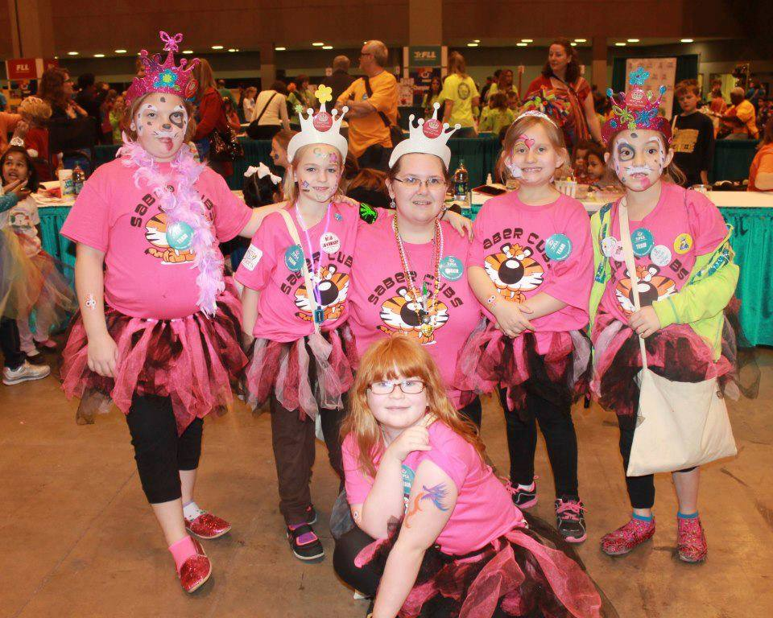
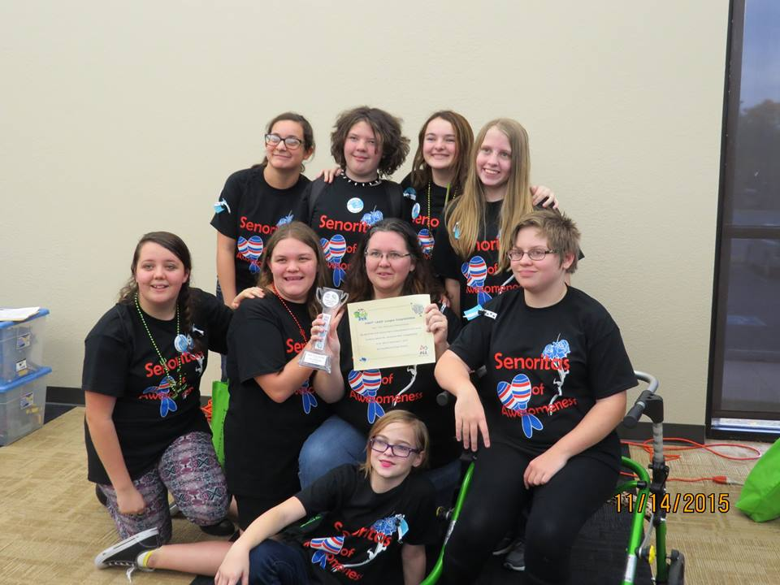
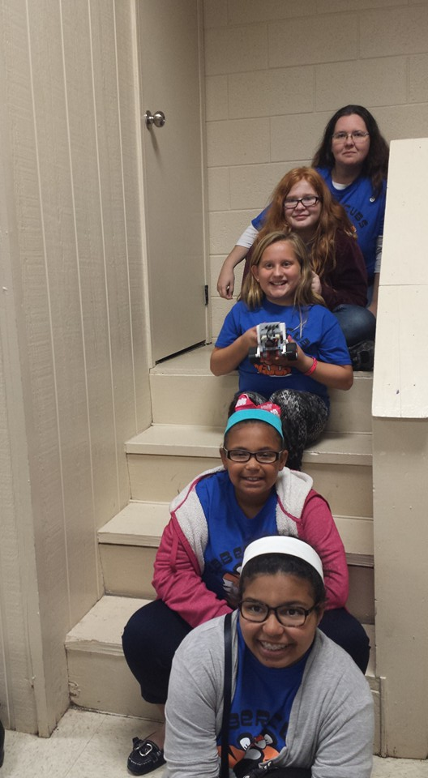
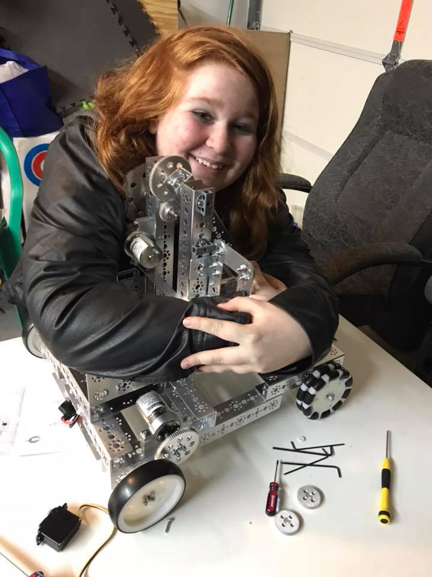
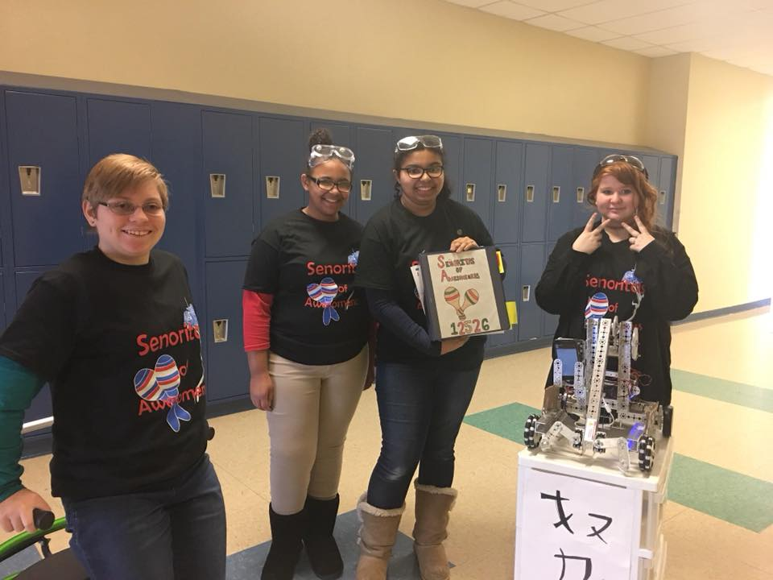
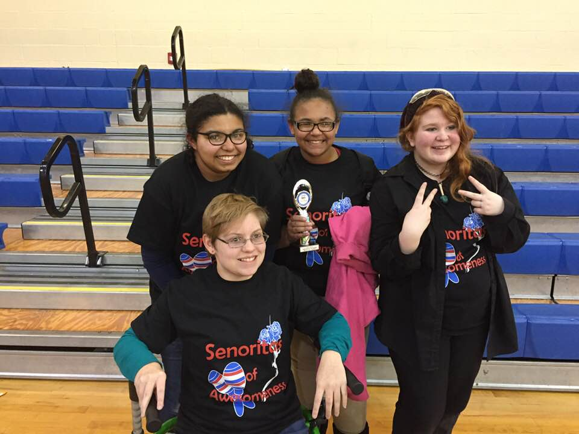

We began as a Moore Girl Scout Robotics FLL (First Lego League) team in the 2011-12 season and competed in FLL for 6 seasons. Throughout our six seasons in FLL we went to state 3 times and won multiple awards in areas such as teamwork and project. A couple of our members were also on a Jr. FLL team (The Sabercubs) for multiple years starting in the 2010-11 season. The Sabercubs won multiple awards at the regional and state level and were one of the 50 teams selected to go to Worlds twice. While at Worlds the Sabercubs won two awards, team spirit and simple machine. In the 2017-18 season The Sabercubs moved up from Jr. FLL to an FLL team.
  The 2017-18 Season "Relic Recovery" was our rookie FTC season where we used a basic push bot design with blockly drag and drop code. Despite having technical errors at our first qualifier we earned the Motivate award which earned us a place at State. At state our robot was even better than before and worked a lot more consistently. Despite not advancing to super regionals, we placed 26th of the 41 teams at state in the robot game.
  © 2019 Lauren R. Smith